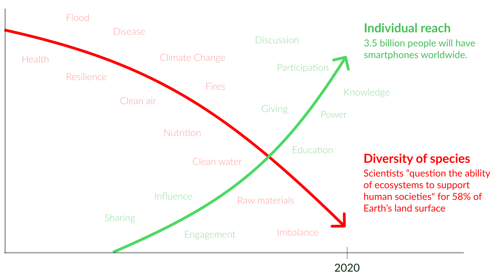
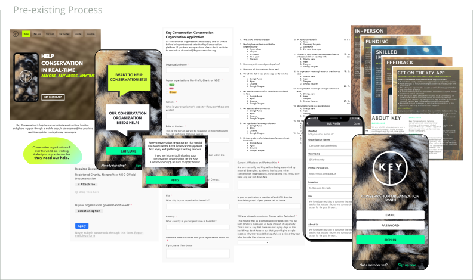
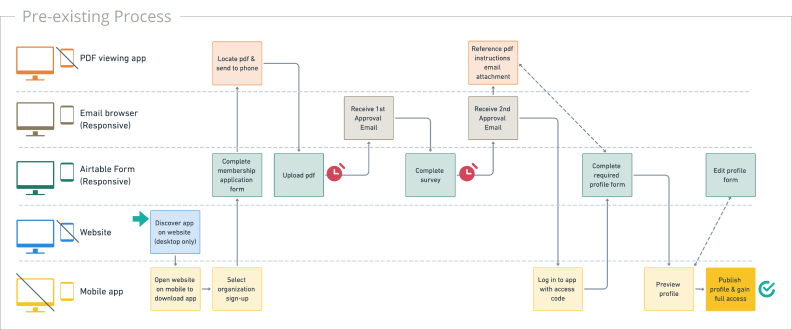
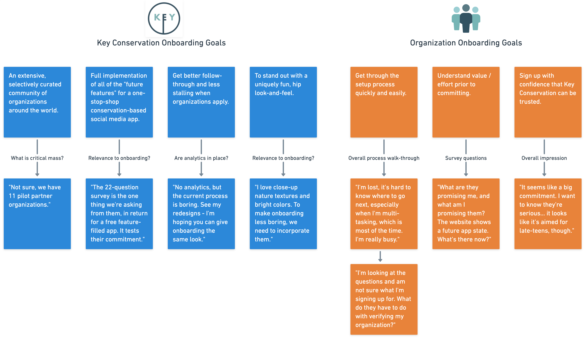
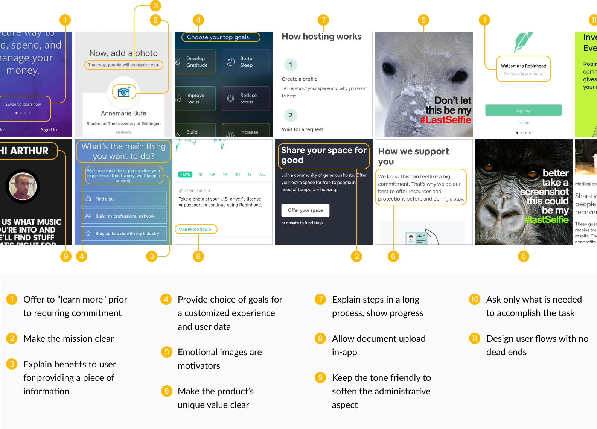
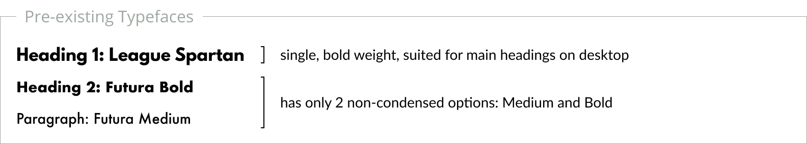
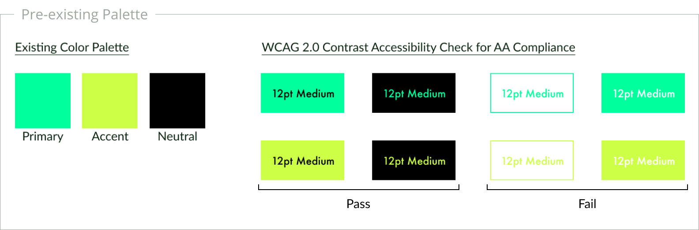
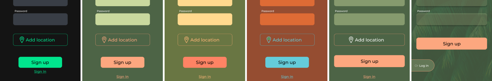
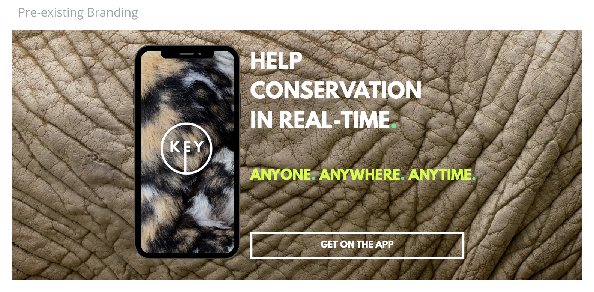
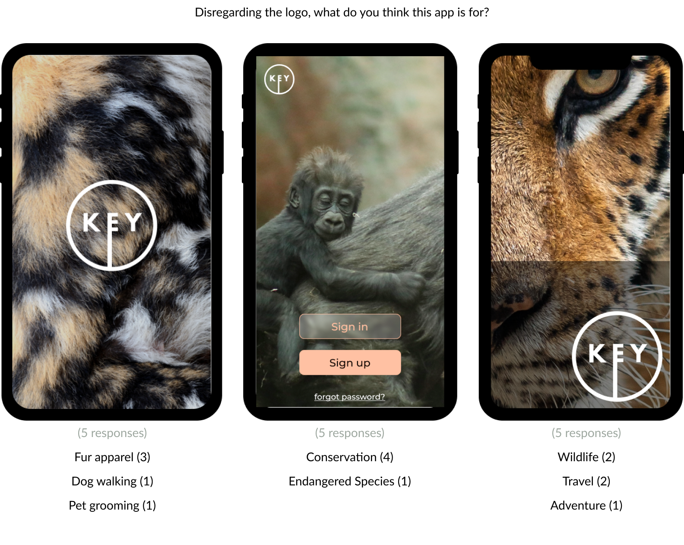

Key Conservation:
Replenishing biodiversity
through local, real-time support
Onboarding designs for Key Conservation
Why Key Conservation Matters
Biodiversity ensures the resilience of habitats -- including human habitats. In the past, its care fell to an expert community of scientific professionals through research, policy, and fieldwork.
Key Conservation enables that expert community of conservationists to enlist any smartphone-carrying individual to infill gaps in support: from awareness of local surroundings, to equipment lending, to active volunteering of skills or time on urgent initiatives. It empowers average individuals to affect change, and to follow the effects of their specific contributions -- no PhD required.
Redesigning Onboarding
Why Focus on Onboarding?
The Key mobile app builds a community recruited from two groups: Conservation organizations and individual supporters. Organizations make up the backbone of the community. Their active involvement furnishes the content through which supporters engage and contribute.
The pre-existing onboarding process deterred the organizations that would draw in supporters. A majority of motivated “pilot” organizations stalled during the process. Less motivated proxy end-users interviewed stated that they were likely to abandon it prior to completion.
Our challenge: Redesign the onboarding flow to improve organizations’ follow-through in completing membership.
Scoping and Research
Given an aggressive timeline, and limited access to both Key Conservation staff and applicant organizations, we customized our approach to research:
- Review the pre-existing onboarding process
- Uncover stakeholders’ goals
- Comparatively investigate other onboarding flows
Reviewing the Pre-Existing Process
Screenshots of desktop-only website, application form, airtable survey, pdf instructions, in-app profile form, and app screens.
The screenshots above show a lengthy pre-existing process spanning multiple devices: it entailed a fifteen-question form, a document upload, twenty-two detailed survey questions, a pdf how-to guide email attachment, a form with twelve inputs required to populate a profile, and two approval wait times.
By diagramming the existing onboarding process, we exposed breaks in the user flow.
By diagramming the sequence of screens that the end-user encountered, above, we could easily spot the hurdles that likely contributed to drop-out:
- Two multiple-day waits for approvals (red clock icons)
- Five different environments to navigate between (horizontal bands)
- Environments optimized for mobile-only and desktop-only viewing (device icons)
A fundamental problem with the pre-existing approach: it assumed an abundance of applicants from whom to select, but without the outreach focus to realize that goal, only eleven pilot organizations had joined after years of product planning.
A more welcoming, guided approach could entice applicants, encourage completion of membership, and engage members to stick around.
Uncovering Stakeholders’ Goals
Through interviews with the director of Key Conservation, we identified primary business objectives for onboarding:
- Build trust: Screen organizations to ensure legitimacy so that supporters don’t have to.
- Engage: Encourage active participation of organizations to attract supporters.
- Excite: Facilitate a process that builds applicant enthusiasm about potential gains from joining.
In parallel, we walked through the pre-existing onboarding process with proxy end-users -- representing organization account administrators -- and asked them to “think out loud.” The exercise revealed that end-users have a different set of primary objectives for onboarding:
- Purpose: Be assured that Key Conservation is a serious organization with a clear mission.
- Value: Understand time and energy input required versus value received, prior to commitment -- beyond the value offered by more established apps.
- Ease of Use: A painless path to begin participating.
Comparative Investigation of Other Onboarding Flows
We researched strategies used by other social-benefit mission-based apps, and apps in which one end-user group must be screened. AirBnB and various financial apps rely on a solid vetting process. World Wildlife Fund is well-known for motivating end-users to make donations. AirBnB Open Homes encompasses, at a high level, all of the challenge characteristics as Key Conservation.
Our Biggest Challenge
We learned early-on that our client was passionately attached to the existing app design and processes -- because they were completely her creation. The client had imagined the features, designed the marketing materials, and had even drawn the artboards for the mobile screens.
In order to advocate for the end-user for a successful product outcome, the UX team had to thread the needle on multiple fronts:
To accommodate, or challenge? The client’s assumption was that visually stimulating graphics would solve the applicant follow-through problem. As UX designers, we evaluated follow-through at a fundamental level, and our research exposed structural issues that cosmetic adjustments would not fix.
To add, or to subtract? The client’s proposed solution was additive -- spice things up with pre-selected dynamic backgrounds, on-trend graphics, and effects. Our findings suggested a subtractive approach -- simplify the process and visuals to help the end-user move quickly over the administrative hurdle.
Wings, or roots? The client’s ideas were big-picture and visionary, our appraisal of her ideas were detailed and evidence-based.
Improved Onboarding Designs
Primary Challenge: How might we encourage follow-through of a lengthy onboarding process, while providing Key Conservation with the business data that they need?
We simplified the information architecture, thereby smoothing out the user flow. In the pre-existing process diagram, we showed the five environments that the user must navigate.

Proposed: An improved user flow would simplify a complex onboarding process and move it to a single environment.
In the improved user flow, we:
- Removed three environments and one waiting period entirely.
- Created a parallel track wherein the user can opt to complete the profile while waiting for approval.
- Moved the entire process to occur in-app.
- Recommended that the marketing site and mobile app be made responsive (not in our scope).
- Paired each requested input field with specific intent of each step.
An Edge-cases Worth Considering
The pre-existing onboarding process was front-loaded with survey questions. Key Conservation considers this a small request, needed to serve its members effectively. Organization applicants generally view it as a taxing upfront request, especially when they are still undecided on the app's value.
An edge case: what if an organization administrator patiently answers pages of questions, only to be rejected due to a problem in their uploaded credentials? Given a lack of international credentialing standards, this was a relevant scenario to consider, especially once Key Conservation scales. The end-user will have wasted time for the benefit of a business that then rejects them.
This compelled us to propose an approach of grouping questions related to onboarding steps. We proposed pushing out periodic short in-app surveys upon completion of related user milestones, after organizations' applications are approved.
Secondary Design Wins... And Losses
Secondary Challenge: How might styling and graphics project trust, clarity, and r eliability while respecting the client’s brand aesthetic?
Our primary objective was to improve onboarding follow-through. We found that end-users paid attention to the visual design to judge the app's value. Following are three examples of how we challenged the pre-existing visual design.
Projecting Clarity through Typeface Hierarchy
The original typefaces limited hierarchy options and were not mobile-friendly.
The pre-existing typefaces were bold for mobile devices, and their limited weight options made text hierarchy a challenge. We proposed two mobile-friendly options with multiple weights. Lato was closer in character width to the original Futura. Given the text-heavy content that the client had provided, Lato was the clear choice.

After: A simple sans-serif typeface with multiple weights allows for better readability optimized for mobile environments.
Improving Accessibility by Expanding the Color Palette
The pre-existing palette contrast ratios only met WCAG 2.0 AA compliance standards in limited combinations. Neon on black was eventually agreed upon as appearing off-message. This left few options to depict states and to differentiate primary focus, and no options for secondary focus.
We proposed alternative palettes reflective of conservation themes, but the client did not feel that they reflected of the brand.
A sampling of proposed alternative color schemes.
Our solution was to retain the existing color palette, but expand on it to allow for accessible combinations.

Supporting Messaging by Challenging the Brand Imagery
The pre-existing brand graphics include a set of animal skin and fur textures. We were asked to incorporate them into the onboarding process as a means to engage the applicant.
Client’s existing marketing image promoting the Key App heavily relied on animal skin textures.
We created a simple test in which fifteen participants were shown one mobile screen each and asked to guess the intent of the app. The left screen is the pre-existing design. The middle screen is a complete rebrand, using a highly emotive image. The right screen is a hybrid -- retaining the use of texture in the pre-existing branding and adding the element of emotion by including the animal's eye.
User test results comparing the existing loading screen and two alternative approaches to imagery and brand.
The fur-only textures were clearly off-message, but they were already so entrenched in the brand’s (and the client's) identity that change was off the table. We managed to keep the onboarding input screens graphics-free for clarity, on condition that we include timed transition screens that pull in the textures. On those screens, we proposed the textures with least potential to be associated with apparel.